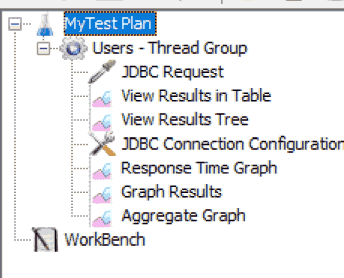
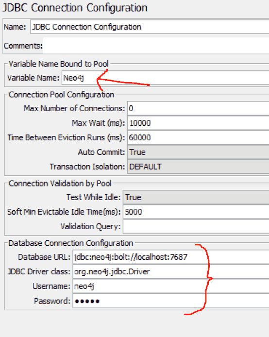
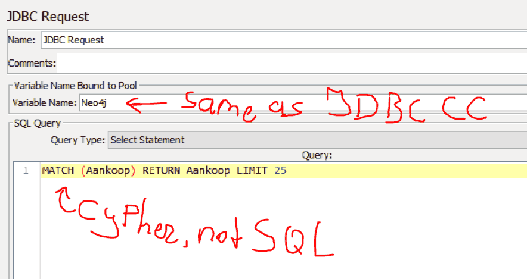
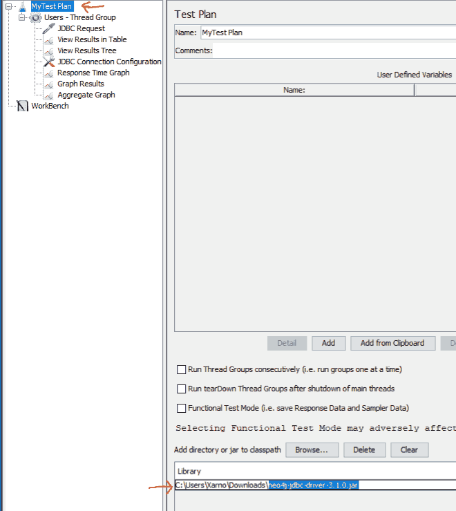
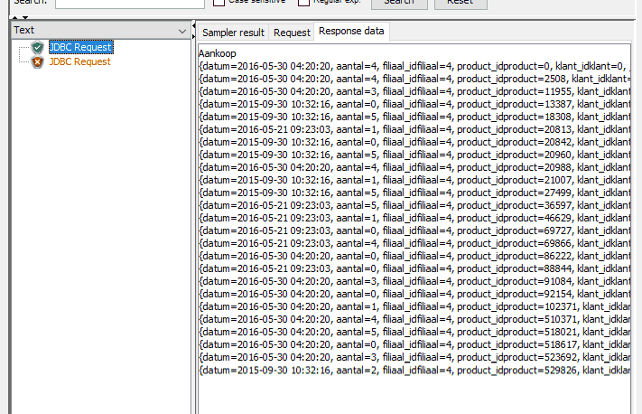

Configuring JMeter for Neo4j
Watch these videos to get a feel for JMeter if you don't know it yet (set speed to 2x and use the arrow keys to skip boring things). YES I KNOW IT'S FOR HTTP ONLY! It's just so you get familiar fast with the UI 🙂
- Create a Thread group
- Create a JDBC Connection Configuration via Add > Config Element
- Create a JDBC Request via Add > Sampler
- Create a View Result Tree (This easily shows the response data in a tab) via Add > Listener
You should have something like this:
Set the JDBC CC:
- jdbc:neo4j:bolt://localhost:7687
- org.neo4j.jdbc.Driver
- neo4j
- neo4j
And the JDBC Request: (I can't tell you what toexactly put in the "SQL Query" part, because I don't know your data structures)
Now get the JDBC Driver for Neo4j (get neo4j-jdbc-driver-3.1.0.jar or something alike):
Add the file to theLibrary in yourTestPlan:
And when you press the Green Play button – Results! Well, sort of… Looks like JMeter has some trouble with setting up multiple connections (hence the red shield with a cross).
This shit should NOT have been this hard to find… (I had to find this info out all by myself. Took me 3 frustrating hours to do so. Call me Jesus, because I suffered for you) 😒